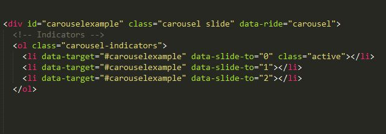
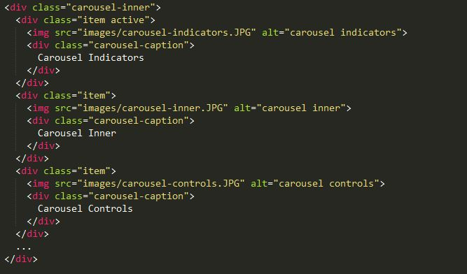
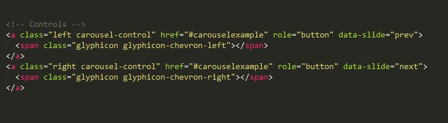

This portion will concentrate on the Carousel.js plugin
(Click the down arrow to view carousel.js)
Carousel.js
Can be found at http://getbootstrap.com/javascript/#carousel
A carousel is a slideshow on your webpage. You can add any content into a carousel. It will transition through the slides on it's own. These are utilized in advertising and to highlight features of a site.
Benfits to using Carousel.js from Bootstrap
- Unlimited Content
- Pictures
- Scripts
- Links
- Videos
- Coding done only in HTML5 document if you want (you can add custom content via JS)
- Automatic resizing of carousel for Mobile
Some things to consider when using the carousel for content
- Will resize depending on content
- Pictures will have to be the same size to keep the carousel from resizing each rotation
- Font Sizing and placement have to be watched
I have found that you can add canvases to combat some of these issues with resizing pictures.
The code
Carousel is broken into three parts
- .Carousel-Indicators
- .Carousel-Inner
- .Carousel left and right controls
.Carousel-Indicators

Tells the carousel how to move from slide to slide
.Carousel-Inner

Content
.Carousel-Controls

little arrows so you can advance or previous slides